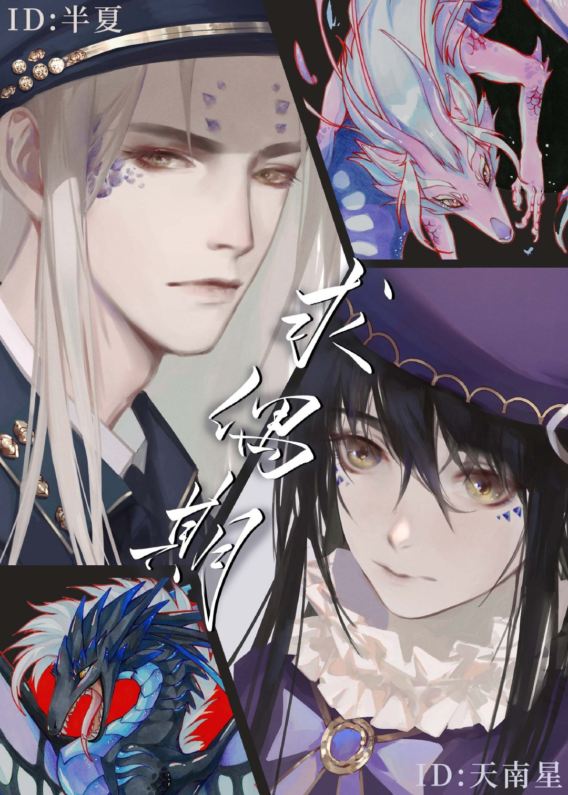

【Tenga en cuenta que un poderoso extraño de una especie diferente se acerca y emite fuertes feromonas de apareamiento hacia usted.】
Banxia: "???"
【El sistema ha generado automáticamente tres opciones para usted.
Opción 1: acepta la propuesta de apareamiento y el extraño te llevará emocionado de regreso a su nido.
Opción 2: rechaza la propuesta de apareamiento y el extraño te llevará directamente de regreso a su nido.
Opción 3: huye inmediatamente y el extraño te perseguirá, te dará una paliza y te llevará de regreso a su nido.】
Alejado en un planeta extraño, Banxia se ha encontrado con pájaros gigantes, mamuts, y podía manejarlos a todos con calma. Es decir, hasta que el cielo se oscurece y una criatura monstruosa, como un dragón mágico, se estrella. La cabeza de la criatura, cubierta de escamas y plumas, se acerca a él. Extiende su lengua carmesí y le da una lamida.
Banxia: !!!∑(°Д°ノ)ノ
Durante miles de años, Tian Nan Xing, un dragón celestial, nunca pensó en buscar pareja. Es decir, hasta que un día, percibió un olor masculino extraño que rápidamente desencadenó sus instintos de apareamiento.
“Quiero… poner huevos”.
[Arriba humana y fondo alienígena] [Después de conocerte, cada día es una temporada de cortejo.]
Guía del lector:
★ No-Humano, Mpreg (puesta de huevos), HE (Final Feliz), mimos mutuos.
★ La parte inferior es un dragón con forma humanoide.